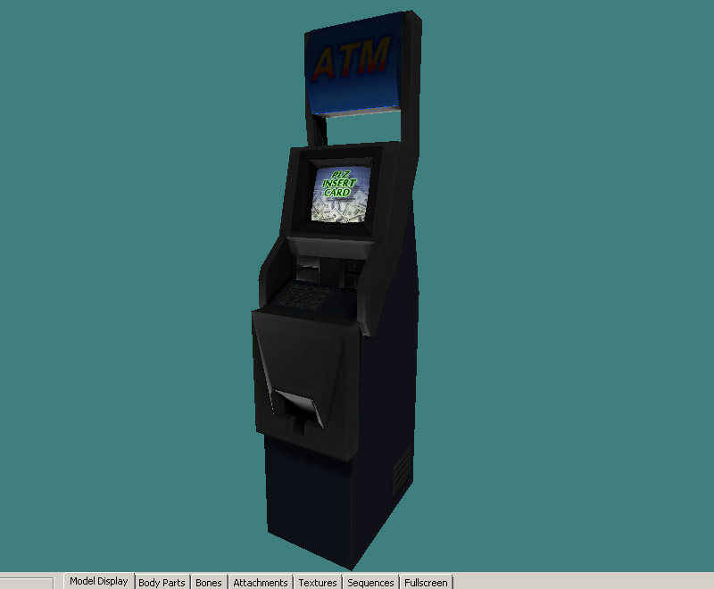

Sven Co-op models supports a texture QC flag called "fullbright" which basically means the texture will be drawn at full brightness at all times. This is used for things like screens, lights, and glows. This quick tutorial will show some ways you can use this. XASH3D also supports fullbright flag.
There are two main ways to use the "fullbright" flag, the first being a QC line in the same format as you would with "masked" or "additive". This method must use the sven-coop studiomdl.exe found in the sven coop SDK folder located here to compile:
C:\Program Files (x86)\Steam\steamapps\common\Sven Co-op SDK\modelling
The way you would write the QC line out will be:
$texrendermode mytexture.bmp fullbright
The second method sets this flag in the model viewers known as HLMV Standalone or P2MV (Paranoia 2 Model Viewer).
This method is as simple as selecting the texture from the texture tab rollout and checking the "fullbright" box and then saving out the model. This is especially useful if you want to set fullbright on existing models without decompile or if you want to use other compilers other than the sven version say for example an older version or XASH studiomdl.
1) First example we will set a texture to fullbright here on this ATM by setting the screen texture to fullbright. As you can see here I have the fullbright line in the QC and am ready to compile
2) Here is the compiled model viewed in HLMV Standalone. Using ctrl and clicking and dragging the mouse I have changed the light direction and then used ctrl-click to move the light from top to bottom so I can preview how it looks in shade. On the texture tab rollout here is the checked fullbright flag.

3) This is what the model looks like in game under various lighting conditions.
4)Now I want to introduce glowing effect method by combining fullbright with Additive flag. In this example I have made a glowing texture version of the ATM keypad. The keypad polygons are simply duplicated and set to the new texture.
I know you are thinking "what about Z-fighting sorting errors due to the two planes occupying the same space? Shouldn't you move it out or use push from normal?". True, you can do this but turns out you can make the engine sort the additive plane overtop if the texture is below the regular keypad in the texture rollout order. This texture order can be verified in HLMV like so:
As you can see since the additive keypad texture is below the regular keypad texture, it will render first.
Using this method of keeping the planes in place has the advantage of not having an outline on certain shapes or a visible distance/outline from a moved plane. To better explain here is what the order looks like in 3DSMAX, MilkShape & Blender before final SMD export:
(Blender is Texure rollout tab, MilkShape3D is "Groups" tab, and 3DSMAX is Material ID number)
5)Now you can see the glowing keypad and the texture order. Now see the model in game.
6) Another example id like to share is having a glow gradient texture to add to the mesh surrounding the screen. I have detached this as a clone not as element but as its own mesh so I can re-UV all the planes to a small (16X64) dim gradient texture in facing outward directions. See how it looks here?
7) Now see how it looks in game